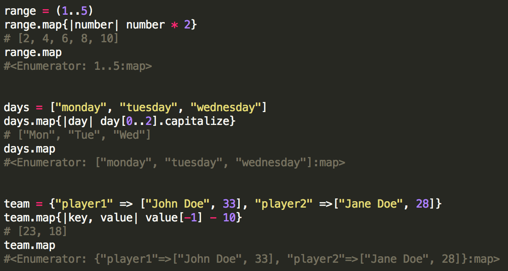
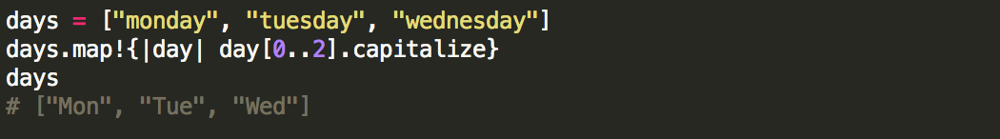

Enumerable#map
07/20/2014
What is it?
Map is a non-destructive method of class Enumerable that takes an enumerable object as its input and returns an array with the results of running its block once on each of its elements. If no block is passed, then an enumerator is returned.
How it's used

Map's destructive little brother, map!
Map's destructive little brother, map!
If your objective is to modify your input, then you might want to consider map!.
